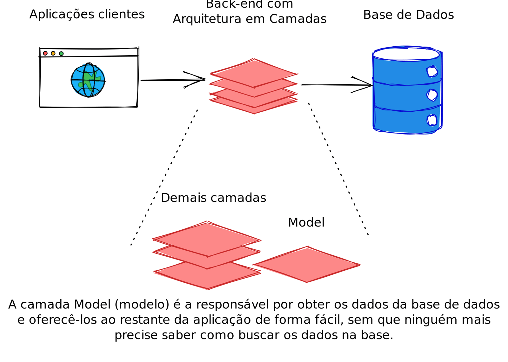

6.4 - Camada Model
Qual é a responsabilidade da camada Model?
No contexto de uma API Back-end, a camada Model é responsável pela comunicação direta com o banco de dados, facilitando o armazenamento, consulta e manipulação de dados. Ela atua como uma ponte entre o banco e as outras camadas da aplicação, centralizando essas operações para manter o código organizado e escalável. Em vez de executar consultas SQL diretamente em arquivos iniciais, como o index.js, a camada Model é responsável por abstrair a interação com o banco de dados, garantindo que outras partes do sistema não precisem conhecer os detalhes dessa interação.
Por exemplo, quando implementamos a funcionalidade de listar todas as pessoas cadastradas, estamos realizando uma operação de leitura de dados, que será tratada de forma organizada na camada Model.

A camada de Model é a responsável por obter os dados da base e oferecê-los de forma simples para o restante da aplicaçãoComo organizar a camada Model?
Na prática, a camada Model será estruturada dentro de um diretório específico no diretório src da aplicação, como src/models/. No entanto, ao criarmos esse diretório, surge a dúvida: como vamos organizar os arquivos aqui dentro? Em projetos grandes, uma prática comum é criar um arquivo para cada tabela do banco de dados. Dessa forma, cada arquivo Model terá uma responsabilidade bem definida: manipular dados de uma tabela específica.
Em resumo:
- Cada arquivo Model representa uma parte específica do banco de dados (geralmente, uma tabela);
- Cada Model organiza, "empacota" e entrega os dados de forma que outras partes da aplicação possam acessá-los facilmente.
Sistema de Gestão Escolar: Adicionando a Camada Model
Agora, vamos retomar o projeto Sistema de Gestão Escolar e expandi-lo, adicionando a camada Model para centralizar as operações do banco de dados.
Antes, já estávamos utilizando uma estrutura similar ao de um Model, mas não havíamos adotado o nome Model para o diretório e nem para o arquivo. Vamos refatorar o projeto para seguir essa convenção.
Relembrando 🧠: O código apresentado no conteúdo, pode ser acessado na pasta
06-design-modular-com-arquitetura-em-camadas/parte-01-inicioou através desse link.
Reestruturação do Projeto
- Renomeação de Pastas e Arquivos: Para mantermos o padrão de nomenclatura, siga os passos abaixo para que a camada Model fique bem definida:
- Renomeie a pasta
src/databaseparasrc/model. - Renomeie o arquivo
src/model/studentsDB.jsparasrc/model/studentModel.js. - Ajuste as importações: Atualize todas as importações para refletirem a nova estrutura:
// tests/integration/studentRoutes.test.js
// const request = require('supertest');
// const app = require('../../src/app');
const connection = require('../../src/model/connection');
// const { studentMock, studentByIdMock } = require('./mocks/studentMocks');
jest.mock('../../src/model/connection');
// tests/integration/studentRoutesSpy.test.js
// const request = require('supertest');
// const app = require('../../src/app');
const connection = require('../../src/model/connection');
No arquivo src/routes/studentRoutes.js modifique a importação e o nome da constante:
// src/routes/studentRoutes.js
// const express = require('express');
const studentModel = require('../model/studentModel');
// router.get('/', async (_req, res) => {
// try {
const students = await studentModel.findAll();
// return res.status(200).json(students);
// } catch (err) {
// console.log(err.sqlMessage);
// return res.status(500).json({ message: 'Internal Server Error!' });
// }
// });
Atenção ⚠️: Todos os locais que utilizavam a constante
studentsDBagora devem referenciarstudentModel, como mostrado no exemplo acima.
-
Remover teste de conexão com MySQL: No arquivo
server.jsremova toda conexão que é feita para testar o funcionamento do MySQL.
const app = require('./app');
const PORT = process.env.PORT || 3001;
app.listen(PORT, async () => {
console.log(`Server running on port ${PORT}`);
});
-
Verificação de Funcionamento: Após realizar as refatorações, execute
npm run devpara conferir se tudo está funcionando sem erros.
Formatando dados da Model
Ao retornar dados diretamente do banco, a nomenclatura utilizada frequentemente segue o padrão snake_case (como a chave birth_date). Para ajustar os dados ao padrão camelCase utilizado em JavaScript, vamos utilizar o módulo camelize, que automatiza essa conversão.
Instalando e Configurando camelize
- Instale o módulo
camelize:
npm install camelize@1.0.1 -E
-
Adicionando camelize ao Model: Modifique o
studentModel.jspara converter os dados automaticamente paracamelCase:
// src/model/studentModel.js
const camelize = require('camelize');
// const conn = require('./connection');
// const findAll = async () => {
// const [result] = await conn.execute('SELECT * FROM students;');
return camelize(result);
// };
// const findById = async (id) => {
// const [result] = await conn.execute('SELECT * FROM students WHERE id = ?;', [id]);
return camelize(result[0]);
// };
Com o camelize, um retorno que antes teria o formato:
{
"id": 1,
"name": "Ana Souza",
"cpf": "123.456.789-01",
"birth_date": "2000-05-14T03:00:00.000Z", // campo que será alterado
"email": "ana.souza@example.com",
"cep": "01000-000",
"address": "Rua A, Bairro B, Cidade C - SP"
},
Será convertido automaticamente para camelCase, resultando em:
{
"id": 1,
"name": "Ana Souza",
"cpf": "123.456.789-01",
"birthDate": "2000-05-14T03:00:00.000Z", // campo alterado para camelCase
"email": "ana.souza@example.com",
"cep": "01000-000",
"address": "Rua A, Bairro B, Cidade C - SP"
},
Essa padronização facilita o trabalho com os dados nas demais camadas da aplicação, mantendo a consistência e alinhamento com o padrão de nomenclatura do JavaScript.
Atenção ⚠️: Os testes agora apresentarão falhas, pois alteramos o formato de retorno da nossa API. Para corrigir, abra o arquivo
tests/integration/mocks/studentMocks.jse adicione novos mocks com a chavebirthDate(diferente da chavebirth_date).
OBS da IA
Alternativa mais moderna
- Sem biblioteca extra, dá para resolver o snake_case com alias no próprio SQL (
SELECT birth_date AS birthDate).
Para o SAP CAP
- No CAP não há conversão manual: os nomes vêm do CDS e o framework gera as tabelas/colunas a partir dele.
camelizenão é necessário.
Minhas anotações
Atalhos: ← → navegar · Ctrl K ou / buscar